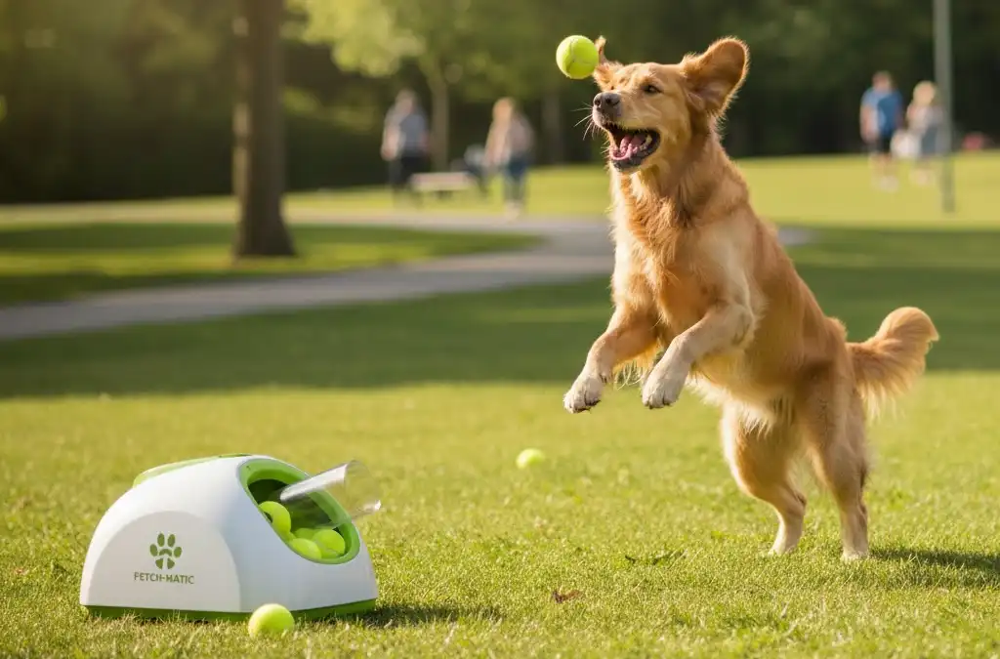
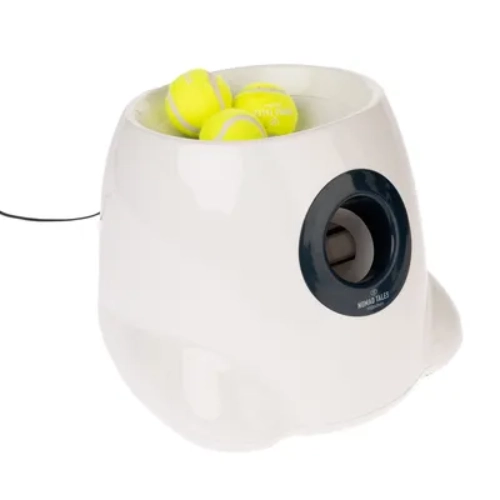
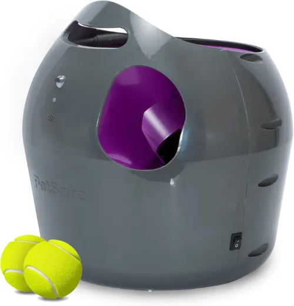
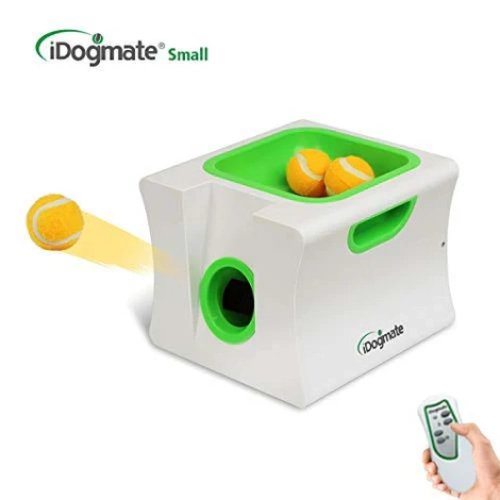

Diversión sin límite: Mejores lanzadores de pelotas automáticos de 2026

Si tu perro no se cansa, o necesita hacer más ejercicio, un lanzador automático es lo que necesitas. Y no es por capricho, es una inversión en tu salud y en la suya. En este artículo analizamos los modelos más seguros y potentes de este año.
1.Nomad Tales Bloom Maxi : Una bestia para perros grandes

Del gigante europeo Zooplus nos quedamos con este lanzador para perros grandes y medianos. A diferencia de su hermano pequeño el “mini” y de otros modelos, este utiliza pelotas de tenis de tamaño estándar y tiene una potencia de disparo impresionante. Funciona con una batería recargable y no de cable de red, ya que se diseñó para exteriores. Su punto fuerte es la potencia, es capaz de lanzar la pelota hasta 12 metros de distancia en su modo más fuerte. ¡Es mejor no ponerse delante!
- Batería recargable de larga duración (ideal para el parque).
- Lanza hasta a 12 metros de distancia.
- Tres ajustes de distancia muy precisos.
- Bastante ruidosos al cargar el disparo.
- No tiene sensores de seguridad sofisticados.
- Pocas opciones de configuración.
2. PetSafe Automatic Ball Launcher: Seguridad ante todo

Para nosotros la mejor opción, sobre todo, por su seguridad, Este lanzador de pelotas lleva incorporado un sensor de movimiento en su parte delantera, capaz de detectar animales o personas a una distancia de 2 metros en la zona de lanzamiento. También cuenta con un modo de seguridad de exceso de ejercicio automático cada 15 minutos de juego.
Además, puedes ajustar el ángulo y la distancia los lanzamientos en varios modos de fuerza. Funciona con cable de red o batería.
- Múltiples sensores de seguridad.
- Modo de descanso automático.
- Resistente al agua.
- El pitido de advertencia puede asustar a perros tímidos.
- No tiene mando a distancia
3. IDOGMATE Mini: El rey para los perros pequeños

Si tienes un jardín pequeño y un perro pequeño, este es tu lanzador automático. Un modelo muy compacto (solo 15.9 centímetros de alto) que usa pelotas pequeñas de unos 4,4 centímetros de diámetro. Además, puedes llevarlo donde quiera, ya que funciona con una batería capaz de hacer hasta 250 lanzamientos.
También cuenta con varias opciones de velocidad que puedes elegir desde su mando a distancia.
- Mando a distancia para controlar los disparos.
- Muy silencioso comparado con la competencia.
- Incluye 3 pelotas de alta calidad.
- Las pelotas son específicas.
- No apto para exteriores grandes.